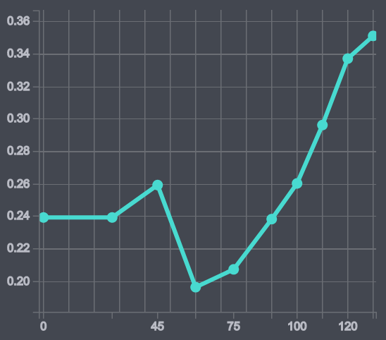
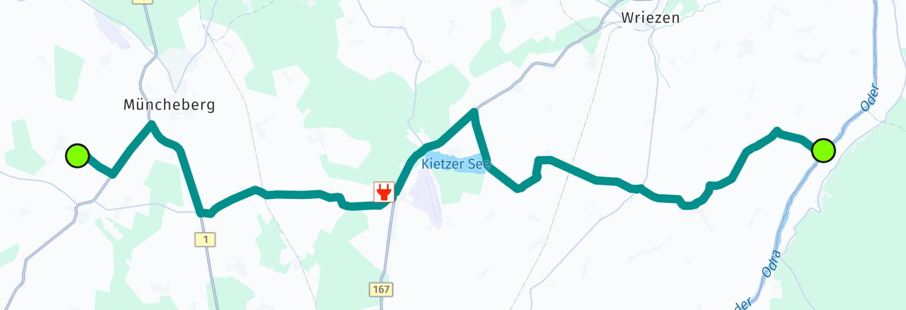

Get routes for electric vehicles
Electric vehicle (EV) usage and sales continue growing around the world. How can HERE help to provide the best routes for electric vehicles?
HERE EV Routing delivers optimized routes for EVs to get from A to B, minimizing the number of charging stops and optimizing battery charge times (based on the vehicle’s consumption model). It also takes into account a number of factors when planning trips, including topography, road geometry, real-time traffic information and traffic patterns.
Instead of searching for charging stations along the route, HERE analyzes the charging time at every possible station and chooses the most appropriate combination that will deliver the shortest driving and charging times.
Calculate EV routes
Getting EV routes is simple. Similar to getting car or truck routes, for EV routing you just need to add electric vehicle specific route options. This way you can get routes for electric vehicles in the same way as for other transport modes. Just specify EVRouteOptions and add them to the calculateRoute() method:
_routingEngine.calculateEVCarRoute(waypoints, _getEVCarOptions(),
(RoutingError? routingError, List<here.Route>? routeList) {
if (routingError == null) {
// When error is null, then the list guaranteed to be not null.
here.Route route = routeList!.first;
// Use routes from list.
} else {
var error = routingError.toString();
_showDialog('Error', 'Error while calculating a route: $error');
}
});
Define EVCarOptions
By default, EVRouteOptions will not include the required parameters to ensure that a destination can be reached without running out of energy.
To ensure this, you need to set the required parameters that may add charging stations to the route - while still optimizing the result for overall travel time.
Below you can see an example how to create such options:
// Note: This API is currently only accessible for alpha users.
void _applyEMSPPreferences(EVCarOptions evCarOptions) {
// You can get a list of all E-Mobility Service Providers and their partner IDs by using the request described here:
// https://www.here.com/docs/bundle/ev-charge-points-api-developer-guide/page/topics/example-charging-station.html.
// The RoutingEngine will follow the priority order you specify when calculating routes, so try to specify at least most preferred providers.
// Note that this may impact the route geometry.
// Most preferred provider for route calculation: As an example, we use "Jaguar Charging" referenced by the partner ID taken from above link.
List<String> preferredProviders = ["3379b852-cca5-11ed-8856-42010aa40002"];
// Example code for a least preferred provider.
List<String> leastPreferredProviders = ["12345678-abcd-0000-0000-000000000000"];
// Alternative provider for route calculation to be used only when no better options are available.
// Example code for an alternative provider.
List<String> alternativeProviders = ["12345678-0000-abcd-0000-000123456789"];
// Excluded provider that should not be considered for route calculation.
// Example code for an excluded provider.
List<String> excludedProviders = ["00000000-abcd-0000-1234-123000000000"];
evCarOptions.evMobilityServiceProviderPreferences = EVMobilityServiceProviderPreferences();
evCarOptions.evMobilityServiceProviderPreferences.high = preferredProviders;
evCarOptions.evMobilityServiceProviderPreferences.low = leastPreferredProviders;
evCarOptions.evMobilityServiceProviderPreferences.medium = alternativeProviders;
evCarOptions.evMobilityServiceProviderPreferences.exclude = excludedProviders;
}
EVCarOptions _getEVCarOptions() {
EVCarOptions evCarOptions = EVCarOptions();
// The below three options are the minimum you must specify or routing will result in an error.
evCarOptions.consumptionModel.ascentConsumptionInWattHoursPerMeter = 9;
evCarOptions.consumptionModel.descentRecoveryInWattHoursPerMeter = 4.3;
evCarOptions.consumptionModel.freeFlowSpeedTable = {0: 0.239, 27: 0.239, 60: 0.196, 90: 0.238};
// Must be 0 for isoline calculation.
evCarOptions.routeOptions.alternatives = 0;
// Ensure that the vehicle does not run out of energy along the way
// and charging stations are added as additional waypoints.
evCarOptions.ensureReachability = true;
// The below options are required when setting the ensureReachability option to true
// (AvoidanceOptions need to be empty).
evCarOptions.avoidanceOptions = AvoidanceOptions();
evCarOptions.routeOptions.speedCapInMetersPerSecond = null;
evCarOptions.routeOptions.optimizationMode = OptimizationMode.fastest;
evCarOptions.batterySpecifications.connectorTypes = [
ChargingConnectorType.tesla,
ChargingConnectorType.iec62196Type1Combo,
ChargingConnectorType.iec62196Type2Combo
];
evCarOptions.batterySpecifications.totalCapacityInKilowattHours = 80.0;
evCarOptions.batterySpecifications.initialChargeInKilowattHours = 10.0;
evCarOptions.batterySpecifications.targetChargeInKilowattHours = 72.0;
evCarOptions.batterySpecifications.chargingCurve = {0.0: 239.0, 64.0: 111.0, 72.0: 1.0};
// Apply EV mobility service provider preferences (eMSP).
// This API is currently in alpha stage. Comment it out when you are participating.
// _applyEMSPPreferences(evCarOptions);
// Note: More EV options are available, the above shows only the minimum viable options.
return evCarOptions;
}
As part of the EVCarOptions we have defined above a consumption model, battery specs and optionally, EV mobility service provider preferences.
Define the consumption model
The following parameters define a consumption model to get more accurate results for electric vehicles:
- ascentConsumptionInWattHoursPerMeter: Rate of energy consumed per meter rise in elevation.
- descentRecoveryInWattHoursPerMeter: Rate of energy recovered per meter fall in elevation.
- freeFlowSpeedTable: Function curve specifying consumption rate at a given free flow speed on a flat stretch of road.
- trafficSpeedTable: Function curve specifying consumption rate at a given speed under traffic conditions on a flat stretch of road.
- auxiliaryConsumptionInWattHoursPerSecond: Rate of energy consumed by the vehicle's auxiliary systems (e.g., air conditioning, lights) per second of travel.
A consumption speed table defines the energy consumption rate when the vehicle travels on a straight road without elevation change at a given speed in km/h. It represents a piecewise linear function.
Here is an example of a free flow speed list. On the left you see the speed and on the right, consumption:
- 0: 0.239
- 27: 0.239
- 45: 0.259
- 60: 0.196
- 75: 0.207
- 90: 0.238
- 100: 0.26
- 110: 0.296
- 120: 0.337
- 130: 0.351
In a graph it will look like this:

You can specify two different consumption speed tables - free flow speed table and traffic speed tables:
- Free flow speed: Describes the energy consumption when traveling at constant speed.
- Traffic speed: Describes the energy consumption when traveling under heavy traffic conditions, for example, when the vehicle is expected to often change the travel speed at a given average speed.
If a trafficSpeedTable is not provided then only the freeFlowSpeedTable is used for calculating speed-related energy consumption.
The EVConsumptionModel specifies the energy consumption model of the electric vehicle. We also add BatterySpecifications. With these options, additional charging stations may be inserted into the route as additional stopovers - which means that the route will be split into more sections depending on the number of inserted charging stations.
Note
If you want to include such required charging stations, it is also mandatory to use OptimizationMode.FASTEST. You also need to set ensureReachability to true. When ensureReachability is activated, the route may be adjusted so that required charging stations are along the resulting path and the required charging stations are added as WayPoint items to the route.
Transactions for this feature are counted as "Routing EV" only when this field is set to true. Otherwise, such API calls are billed as normal car route.
All options can influence the time it takes to calculate a route for electric vehicles. Most importantly, a large battery capacity - as set with totalCapacityInKilowattHours - can decrease the need for charging stops - as well as a fully loaded battery when starting the trip - see initialChargeInKilowattHours: a relatively low value means that the route must include charging stations near the beginning. Otherwise, the route calculation may even fail.
Currently, the engine will only include charging stations that are in service. Charging stations that our out-of-service or in maintenance are not considered. However, due to the dynamic situation at charging stations, the engine does not consider if a station is currently occupied or reserved. So, in worst case, it can happen that you arrive at a station and it is currently being used to charge another car.
Note that we also specify the available battery connector types, so that charging stations that do not provide a compatible connector to charge the car will be excluded.
Note
Usually, you can take the consumption and battery information from the car itself or consult the manual or your car manufacturer directly. Note that not all information may be available to you and some information may be only exclusively known by the manufacturer. Either way, the route calculation process will take the provided specifications into account and missing values will be filled with suitable default values.
Define the ev mobility service provider preferences
When calculating routes, the RoutingEngine allows specifying priority preferences for evMobilityServiceProviderPreferences to optimize the route based on user requirements. Note that this feature requires an active online connection.
An e-Mobility Service Provider (eMSP) is a company or organization that provides services to electric vehicle drivers, focusing on enabling access to and use of EV charging infrastructure. eMSPs serve as intermediaries between EV drivers and charging station networks.
eMSPs preferences allow users to select the preferred partner charging stations.
A most preferred eMSPs can be selected to ensure it is prioritized during route calculation, while a least preferred provider can be included with lower priority. Alternative providers can also be specified, to be considered only when no better options are available. Additionally, certain providers can be excluded entirely from the route calculation process.
Specifying evMobilityServiceProviderPreferences may impact the resulting route geometry. It is not mandatory, but it can help to improve the user experience. For example, users that want to exclude certain providers can avoid that a route will include such providers.
Note
Currently, this is a closed-alpha feature, so it is only available for selected customers. There could be a few bugs and unexpected behaviors. Note: Participants of the closed-alpha group can get access from HERE to use this feature. If the credentials are not enabled, a SearchError.FORBIDDEN will be propagated.
Find charging stations along the route
Especially for longer journeys with electric vehicles, it is important to plan for charging stops along the way. After all, charging stations are much less common than gas stations. With the above options, the RoutingEngine tries to find the fastest route, i.e., one with the lowest overall time consumed to reach the destination, while ensuring that the vehicle does not run out of energy along the way.
The result of the calculation is a route optimized for electric vehicles - instead of just adding any charging stations found along the way - as we have shown in the Search Along a Route section.
Once the route is calculated, you can gather more useful information. The code snippet shown below will log the estimated energy consumption per Section and list the actions you need to take in order to charge the battery - if needed:
void _logEVDetails(here.Route route) {
// Find inserted charging stations that are required for this route.
// Note that this example assumes only one start waypoint and one destination waypoint.
// By default, each route has one section.
int additionalSectionCount = route.sections.length - 1;
if (additionalSectionCount > 0) {
// Each additional waypoint splits the route into two sections.
print("EVDetails: Number of required stops at charging stations: " + additionalSectionCount.toString());
} else {
print(
"EVDetails: Based on the provided options, the destination can be reached without a stop at a charging station.");
}
int sectionIndex = 0;
List<Section> sections = route.sections;
for (Section section in sections) {
EVDetails? evDetails = section.evDetails;
if (evDetails == null) {
print("No EVDetails found.");
return;
}
print("EVDetails: Estimated net energy consumption in kWh for this section: " +
evDetails.consumptionInKilowattHour.toString());
for (PostAction postAction in section.postActions) {
switch (postAction.action) {
case PostActionType.chargingSetup:
print("EVDetails: At the end of this section you need to setup charging for " +
postAction.duration.inSeconds.toString() +
" s.");
break;
case PostActionType.charging:
print("EVDetails: At the end of this section you need to charge for " +
postAction.duration.inSeconds.toString() +
" s.");
break;
case PostActionType.wait:
print("EVDetails: At the end of this section you need to wait for " +
postAction.duration.inSeconds.toString() +
" s.");
break;
default:
throw ("Unknown post action type.");
}
}
print("EVDetails: Section " +
sectionIndex.toString() +
": Estimated battery charge in kWh when leaving the departure place: " +
section.departurePlace.chargeInKilowattHours.toString());
print("EVDetails: Section " +
sectionIndex.toString() +
": Estimated battery charge in kWh when leaving the arrival place: " +
section.arrivalPlace.chargeInKilowattHours.toString());
// Only charging stations that are needed to reach the destination are listed below.
ChargingStation? depStation = section.departurePlace.chargingStation;
if (depStation != null && depStation.id != null && !chargingStationsIDs.contains(depStation.id)) {
print("EVDetails: Section " + sectionIndex.toString() + ", name of charging station: " + depStation.name.toString());
chargingStationsIDs.add(depStation.id.toString());
_addCircleMapMarker(section.departurePlace.mapMatchedCoordinates, "assets/required_charging.png");
}
ChargingStation? arrStation = section.departurePlace.chargingStation;
if (arrStation != null && arrStation.id != null && !chargingStationsIDs.contains(arrStation.id)) {
print("EVDetails: Section " + sectionIndex.toString() + ", name of charging station: " + arrStation.name.toString());
chargingStationsIDs.add(arrStation.id.toString());
_addCircleMapMarker(section.arrivalPlace.mapMatchedCoordinates, "assets/required_charging.png");
}
sectionIndex += 1;
}
}
Note that postAction.duration.inSeconds provides the estimated time it takes to charge the battery. This time is included in the overall route calculation and the estimated time of arrival (ETA).
Below is a screenshot of how a resulting route may look.

Here you can see that the route required two stops at a charging station - indicated by red markers. The route contains three sections as each charging station splits the route - when inserting additional waypoints.
The first section includes a post action which describes the charging stop. It contains the information on the expected arrival charge among other information.
Unless specified otherwise, the energy consumption is assumed to be in Wh.
Search for EV charging pools
If you don't plan to follow a Route, we got you covered, too: with the online SearchEngine you can also search for EVChargingStation connectors that are part of a EVChargingPool. A charging pool for electric vehicles is an area equipped with one or more charging stations.
Use PlaceCategory.businessAndServicesEVChargingStation to find pools. Alternatively, you can use a free text query like "charging station". In the Details of a Place result you can find the list of found pools containing stations, if any.
You can also search for stations with the OfflineSearchEngine, if this engine is supported by your edition of the HERE SDK.
The HERE SDK also allows populating the results with additional charging station parameters, such as EVChargingPoolDetails and more fields in EVChargingStation. For online use, obtaining these detailed results requires enabling the closed-alpha feature by calling searchEngine.setCustomOption("discover.show", "ev"). Additionally, an extra license is required. For use with the OfflineSearchEngine (if available for your edition), no license is required. Please contact us to receive online access. If your credentials are not enabled, a SearchError.forbidden error will indicate the missing license.
Show reachable area
With isoline routing you can visualize the area of reach based on parameters like battery consumption. This is explained in greater detail here.
Try the EV example app
You can find the "ev_routing_app" example app on GitHub.